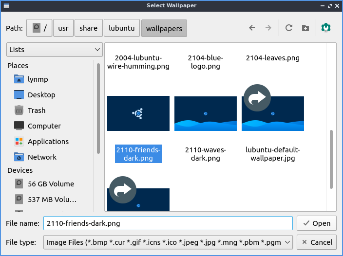
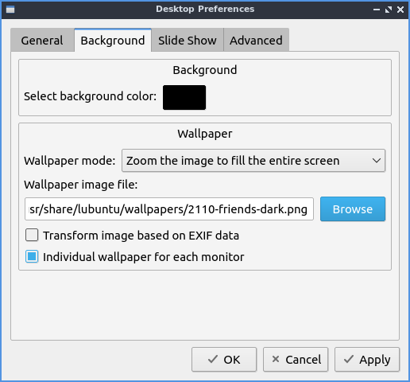
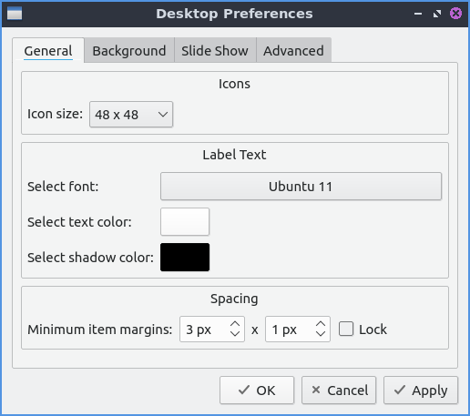
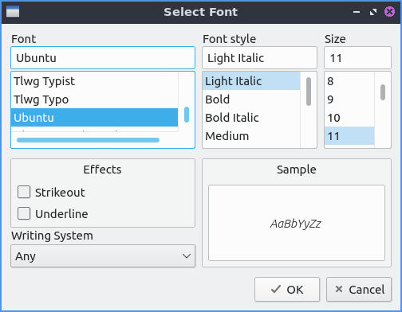
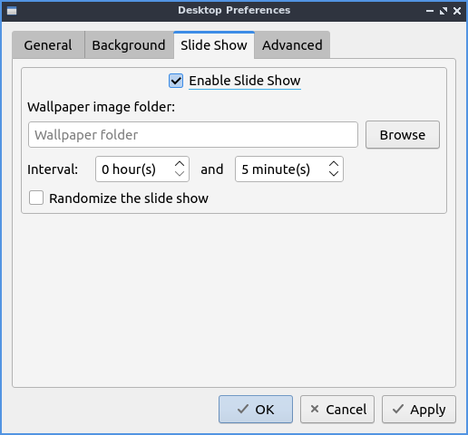
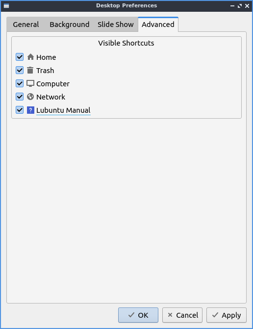

Chapter 3.2.5 Desktop¶
Desktop is an application to change the desktop background, the appearance of icons, and even desktop slideshows.
Usage¶
The Background tab has settings for desktop background. To change the desktop background you can either type the path of the file you can type in Wallpaper image file or use the Browse button to bring up a dialog to choose which the desktop.
To change the background color if you select that press the button to the right of Select background color. The drop down menu Wallpaper mode lets you change how the image you select for a wallpaper is made to fit on the screen. If you want an image to have multiple copies of a smaller image select tile image from the drop down. If you do not want an image and just a solid color select fill with background color only. To have the image oriented based on metadata check the Transform image based on EXIF data checkbox. To use a different wallpaper on each monitor check the Individual wallpaper for each monitor. If your wallpaper looks stretched and you don’t want it to you can select . This is also useful if your multimonitor setup has the wallpaper split across monitors awkwardly and you want the same wallpaper twice.
The General tab has settings for text on desktop icons and text colors and icon sizes. The drop down menu Icon size lets you choose a different size of desktop icons you can choose a size that looks good on your screen. The box Select text color brings up a widget to pick the color on desktop icons and files. The field Select shadow color changes the shadow on the shadow around the icon. To change the margins change the fields for Minimum item margins field for different coordinates. To change the margins of desktop icons to the edge of the screen in the Margins of work area field. To make the margins always the same number of pixels check the Lock checkbox. To open folders on the desktop in PCManFM-Qt check the Open desktop folders in default file manager by left clicking checkbox. To make an item stay in the same place check the Make all items stick to their positions checkbox.
The box labeled Select font lets you choose which font and size information from a dialog box. On the left is the Font for which font to select on on the bottom or type the name on top. The middle lets you choose the Font style of the font on your desktop. On the far right is a choice for the Size of your font which you can select from the menu. To have your text of your font underlined check the Underline checkbox. To change what languages your fonts can support choose your language in the Writing System drop down menu. To preview how the text will appear look in the Sample box.
The Slide Show tab shows settings for slide show of changing your wallpaper automatically like a slide show. The checkbox Enable Slide Show enables the slide show that auto changes your wallpaper. The field Wallpaper image folder changes the path to find the different pictures for the slideshow or to find a folder press the Browse button. To change how long it takes for the slideshow of the desktop background to change change the fields in Interval fields for changing how fast the slideshow changes. To randomize the order of the slide show check the Randomize the slide show checkbox.
The Advanced tab has settings for default desktop icons or included. To show or hide any of the default desktop icons check/uncheck the checkboxes for: Home, Trash, Computer, Network, or Denios-OS Manual.
To quit Desktop press the Escape key.
Version¶
Denios-OS ships with 1.1.0 of Desktop.
How to Launch¶
To launch Desktop from the menu , from LXQt Configuration Center press the desktop button to launch it, or run
pcmanfm-qt --desktop-pref=general
from the command line. Another way to launch this is to right click on the desktop and select . The desktop icon for Desktop Preferences is a gray rectangle with a small hole missing.